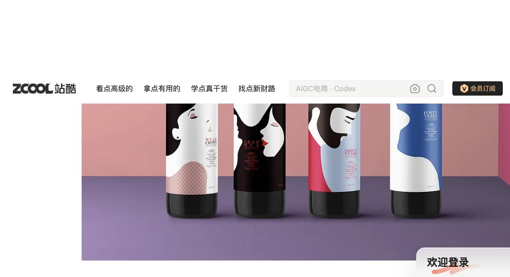

Personal Design Systems — Three Portfolios
Boss follow-up to the Personal Design System demo: three real ZCOOL portfolios, each turned into an evidence-grounded, visually distinct reusable design system.
What this page is: a side-by-side comparison of three independently-extracted
Personal Design Systems. Each was built the same way — sample real portfolio works, extract only
evidence-supported rules, tag confidence honestly — but the results are deliberately
different, because the three studios are genuinely different. See the comparison matrix below for
exactly where they diverge.
The Three Systems

Packaging & Brand Design · Guangzhou
造物起异包装设计
Strongest signatureOne fixed mark, reused verbatim across every SKU in a family (HIGH, 4 works) — the studio's own stated "超级符号" method.
View full system →

Regional Brand & Packaging · Yinchuan
独角狮设计
Strongest signatureFull register-shift methodology — photography, illustration, or clean corporate, matched to category rather than one house style (HIGH, all 8 works).
View full system →

Illustration & Cultural Character/IP · Beijing
寒江雪的插画
Strongest signatureGold as a unifying premium accent across otherwise different illustration techniques (HIGH, 6 of 10 works).
View full system →
Comparison Matrix
| Dimension | 造物起异 | 独角狮 | 寒江雪 |
|---|---|---|---|
| Dominant visual mode | Symbol-repetition system | Category-driven versatility/range | Character/IP personification + craft reinterpretation |
| Color behavior | One dominant hue + one accent, per brand | Restrained 2–3 colors, fully client-driven; earth tones for agri clients | Gold as a unifying accent across otherwise different techniques |
| Typography | Bilingual CN/Latin, hierarchy decided per brief | Icon-integrated logotype; occasional numeral-as-icon (weak signal) | Sparse, image-led; theatrical staged type or seal-stamp title graphics |
| Composition | Ensemble/family shots for multi-SKU; dark-vs-light staging split by category | Format-versatile — grid, logo, technical manual, tri-fold; no one repeated layout | Staged narrative scenes vs. single-figure portraits vs. plain product-photo |
| Signature device | One fixed repeatable mark, unchanged across a family | None found — the client's own mark carries the identity | Animals in imperial regalia + ornate circular/curtain framing |
| Imagery | CGI-rendered mockup default; real photography as exception | Spans photography / illustration / flat graphic design by deliverable type | Spans gongbi / cloisonné / stipple / ink-wash illustration, plus a separate real product-photography competency |
| Cultural references | Chinese heritage motifs used selectively, only for premium/ceremonial category | Regional Ningxia agricultural identity; traditional ink-brush accent (single instance) | Pervasive — imperial regalia, cloisonné enamel, gongbi painting, ancient bronze vessels, Dunhuang frescoes, as core practice |
| Strongest transferable rule | Design one fixed mark, reuse it unchanged across every SKU in a family | Match rendering mode and palette restraint to category, not to a fixed house style | Default to gold as the unifying accent regardless of which illustration technique is chosen |